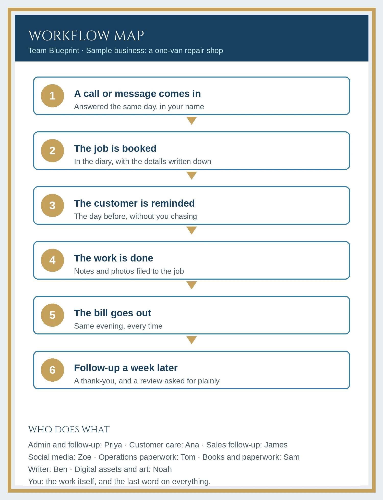
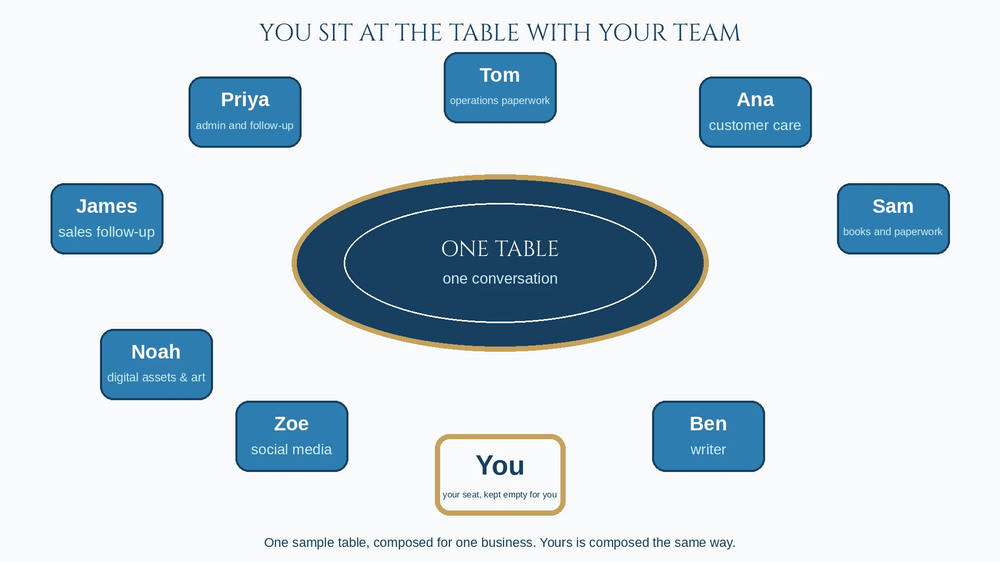

The evening
In an owner-operated business, you are every department: the one who answers, quotes, follows up, does the work, and clears the inbox, all of it yourself, on top of the work itself.
So the inquiry that came in while you were working, a call, a message, a form on your website, doesn't get answered until evening. The quote or estimate goes out, and nobody follows up on it. The finished work the customer loved never turns into a review or a post. And the inbox waits for a quieter day that doesn't come.
The missed call at 8 p.m.
The quote that was never sent.
The invoice that was never chased.
The customer who was never called back.
The problem is not how hard you work. There is one of you, and the office work lands on the same person who does the work it is about.
What you get: the team is the product
What you get is a team. Not software you install, not a tool you operate, and not a task service you feed jobs to: a working AI agent team, built for how your business actually runs, that handles the follow-up and office work for you.
The team's work, at the front of your business: New inquiries get answered, so a lead hears from your business instead of your voicemail. The quotes and estimates you have sent get followed up until there is an answer. While the work is still fresh, reviews get asked for. And finished work becomes posts, so the work you have already done helps win the next job.
Other teams exist for other kinds of work: a Content & Growth Team, and an Ops & Back-Office Team for inbox, scheduling, research, documents and reporting. Any other workflow is quoted as a custom team once your business has been mapped.
And the front office is only where most owners start. Your team is composed around your whole company: marketing, sales follow-up, customer care, operations paperwork, books and admin, each seat a job in your business, built from your map, never a fixed roster. Which seats your first team carries is set in your Team Blueprint; more seats join as more of the company is built.


Worker or agent?
A worker does a task. A team member knows your business.
A worker is handed a job, does that job, and stops: the same for every business, starting from zero on the next task, handing you drafts you still have to finish. An agent on your team knows how your business runs, works with the others toward your goal, and keeps going.
Remembers what the others learned — no one on the team starts from zero.
No hourly meter — it keeps working toward your goal.
Gate Zero doesn't sell you a worker. Gate Zero builds you the team.
How it works
Your Workflow Map
We map how your business actually runs: where the work comes in, where it waits, where it gets stuck. That map is your Workflow Map, yours whether or not you build with us. The $250 is credited in full toward any build.
Team Blueprint
Your team is designed around that map: who does what, built around your own processes, and what you will still approve.
Build and quality test
Your team is built for your business, connected to your own tools, and quality-tested before your team launches.
Handover
You meet your team, and you're walked through your own part of it: how approvals reach you, and what your word does. That is the whole of the training. Then the team starts.
The team works; you approve
The work goes out into your business under the edges you set. What can't be taken back waits for your word. And each month, your regular report shows you what the team has done.
Control
Your supervision isn't a limitation of this product. It is the product.
You approve the boundaries once. At setup, you set the edges once, what the team handles inside limits you choose, and then it works inside them and tells you what it did. And anything that can't be taken back still stops for your word, always.
- SendingAnything your team sends, an email, a message, a quote, a follow-up, appears on your screen first.
- PublishingPosts and review responses appear when you say so.
- SpendingAny purchase, subscription, or payment waits for your yes.
- DeletingNothing is deleted without your approval, ever.
You'll get a seat at the table. You won't get a dashboard to check on them. You'll talk with your team in one conversation, first names, first person, the same way they talk with each other, and you'll be treated the way they treat each other: as a member of the team, not a user of a tool.
Your part. Your part is the decisions, and the approvals at the edges you set. The work itself, the following up, the asking, the posting, the clearing, is the team's.
You grow with your team. Your team teaches as it works: when a concept matters, it's explained on the spot, briefly, in plain words, tied to your business, and the work goes on. The teaching is aimed at your gaps, at what you haven't met yet, and it never re-teaches what you already know. And as part of the run, you'll receive a file of your own, My AI Progress, where you can watch your own command of your team grow: what you've made solid, in your business's terms, and what you could meet next.
And the team checks its own work on a set rhythm, and tells you what it finds, better or worse, in your regular summary, including when the answer is 'nothing to flag; we looked.'
Honesty
Two things we'd rather say here than have you find at cancellation. Gate Zero is licensed, never sold: you are licensing a working team, not buying software or files, and what you never receive is the machinery underneath it. All of it is in the agreement, before you pay.
You keep your data, your content, your accounts, and all the work delivered to you — permanently; if the subscription stops, the only thing that stops is the team reporting for work.
The team runs on our side and stays current on our side. You always work with the current version, and you never get files to update, store, or look after.
Your data. While your data is with us, we use it to do your work, and only your work. We never use it to train or improve a model, never use it for another client's work, and never sell it.
Proof without pretending
Gate Zero is not a concept we are selling on slides. Gate Zero runs our own business, Follow Your Will, every day: Follow Your Will is customer #1. The system was proven on our own operation before it was offered to anyone.
There are no client testimonials or outside results on this page, because there are no outside clients yet.
Pricing
Your Workflow Map.
Credited in full toward any build.
Standard setup, one team.
From $1,500 for a simple team to $3,500 for a genuinely custom workflow. Half to begin, half at handover.
Second team.
for an existing client.
One additional team member.
Every team runs on a monthly subscription. The monthly figure is confirmed in writing before any client is quoted.
For you / Not for you
Gate Zero is for you if you run an owner-operated business where the answering, quoting, chasing and posting all land on you, and the follow-up and office work is landing on you at night, after the real work. You want the work handled, you're glad to approve what goes out, and control matters more to you than novelty.
It is not for you if you want to own the files, the software, or the system itself: we license a working team; we do not sell the machinery. It is not for you if you want a tool to install and run yourself: there is nothing to install; that is the point. And we do not build workflows that give health, legal, financial, hiring, or similar regulated advice or decisions.
Questions
Is this software I install?
No. There is nothing to install, learn, or maintain. Your team is run on our side; you talk with your team, see its work, and approve what needs approving.
Who decides what gets sent to my customers?
You do. The team works inside the edges you set; sending, publishing, spending and deleting wait for your approval.
Do I own the team?
You license it. Your business accounts, data, content, and everything the team produces for you are yours, and they leave with you if you leave.
What do you do with my data while it's with you?
While your data is with us, we use it to do your work, and only your work. We never use it to train or improve a model, never use it for another client's work, and never sell it.
What happens if I cancel?
You keep your data, your content, your accounts, and all the work delivered to you — permanently; if the subscription stops, the only thing that stops is the team reporting for work. Your data, content, accounts and work product are exported to you in the window the agreement sets out. We say it before you pay, not after.
How good is the team I'll get?
It depends on the AI underneath it, and we say so in writing: which AI your team runs on, and the level it is certified for, is named in your agreement. Gate Zero runs on the AI you already use — and before we say it runs on a new one, we prove it there first.
What does my Workflow Map actually get me?
Your Workflow Map: a working picture of your business and where its work gets stuck, yours whether or not you build with us. If you do build, the full $250 is credited toward it.